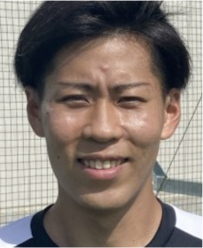

クラブ理念
長作FCでは
サッカーを通じて青少年の精神及び身体の健全な育成を図るとともに、
地域の青少年のサッカーレベルの向上を努めることにより、
日本サッカー界の発展に寄与することを目標としています。
長作FCでは
サッカーを通じて青少年の精神及び
身体の健全な育成を図るとともに、
地域の青少年のサッカーレベルの向上を
努めることにより、
日本サッカー界の発展に寄与することを
目標としています。
指導方針
Enjoy
楽しむ、楽しませる
子どもたちがサッカーを楽しむことはもちろん、観ている家族や友人も楽しませるサッカーを目指します。
Callenge
できた喜び
出来なかったことが、出来るようになる喜び、努力する大切さを伝えます。
Respect
できた喜び
サポートしてくれているコーチや家族はもちろん、試合では対戦チームや審判など、その環境に関わるすべての人たちに敬意を持って接する。
長作FCの特徴
- 専門性の高いスタッフが指導することで、育成に特化した指導を実現
- 少年団と強豪クラブチームの間となる、中間層(ミドルクラス)のチーム作りを目指す
- チームを強くすることだけを第一優先にするのではなく、一人一人がしっかり成長できる指導、環境を提供する
- 近場の移動は基本、現地集合現地解散とし(遠方の場合は配車)、役員や審判などお手伝いをする必要がない環境を提供する
- できる限り市内で試合を組み、子どもたちのプレーする環境を一番に考え、ご家庭の配車等の負担を配慮する
- 基本的に合宿は実施せずに、ご家庭の経済的負担を配慮する(夏休みのみ実施する可能性あり)
- クラブチーム等のセレクションを受けることをいつでも許可します。他のスクールに通うこともOK
長作FCの目指すサッカー
低学年
-
-SKILL-
たくさんドリブルで仕掛けてゴールを目指す
-
-ONE TEAM-
全員守備、全員攻撃
-
-REQUEST-
みんなで声を出し合って助け合う
高学年
-
-AGGRESSIVE-
攻撃も守備も自分達から仕掛け、貪欲にゴールを目指す
-
-TRANSITION-
攻守の切り替えを早くし、常に主導権を握る
-
-INTELLIGENCE-
サッカーの原理原則を理解し、考えて判断し実行する
-
-ORGANIZE-
攻撃と守備の組織力を高め、チームとして勝利を目指す
チーム詳細
| 対象学年 | ・U-7(2023年度 新1年生) ・U-8(2023年度 新2年生) ・U-9(2023年度 新3年生) ・U-10(2023年度 新4年生) ※2024年度：新５年生追加、2025年度：全学年での活動を予定しております。 |
|---|---|
| 活動日 | 土曜日、日曜日、祝日 |
| 活動場所 |
①千葉市立花見川区 長作小学校
②スポーツオーソリティフットボールパーク幕張新都心 |
| 料金について |
年会費：税込 3,500円(毎年) 月会費：税込5,000円 選手登録料：1,700円(毎年) 保険料：800円(毎年) |
| ユニフォームデザイン(HOME&AWAY) |

|
スタッフ紹介
-
代表
渡邊 圭二
経歴 2003~2008 名古屋グランパス
2009 JAPANサッカーカレッジ
2010~2013 ジェフユナイテッド市原・千葉
2014 引退その他実績 U20日本代表/U23日本代表
北京オリンピック代表候補スポーツオーソリティサッカースクール代表
2022~ 千葉市花見川区トレセンコーチ
2022~ 長作フットボールクラブ代表・監督
-
コーチ
兼子 敦貴
経歴 鹿島アントラーズジュニアユース
私立鹿島学園高等学校卒業
桜美林大学卒業
その他実績 日本クラブユースサッカー選手権全国大会出場
JFA プリンスリーグ関東1部リーグ出場スポーツオーソリティサッカースクールコーチ
2022~ 千葉市花見川区トレセンコーチ
2022~ 長作フットボールクラブコーチ
-
コーチ
松本 実
経歴 2013 FC琉球
2014 東京23FC
2015 引退その他実績 高円宮杯全日本ユース(U-18)サッカー選手権大会
全国大会出場
第85回・第87回全国高校サッカー選手権大会
全国大会出場スポーツオーソリティサッカースクールコーチ
2022~ 千葉市花見川区トレセンGKコーチ
2022~ 長作フットボールクラブコーチ
- 
-
コーチ
平形 直也
経歴 2017 fantasma（フットサル）
2019 AOKING（フットサル）
2020～ VALKYRIO船橋（フットサル）スポーツオーソリティサッカースクールコーチ
2022~ 長作フットボールクラブコーチ
長作FC無料体験申込
【件名】長作FC無料体験
①お子さまのお名前 ②学校名 ③学年 ④連絡先 ⑤体験希望日
上記、5点を記載の上、『nagasaku@sportsauthority.co.jp』までご連絡ください。
※2023年度は、チーム無所属の選手のみ体験と入会が可能となります。
チームに所属している選手は、現所属チームと話し合いの上、退団している選手であれば問題ございません。
お問い合わせ：043-296-1799(スポーツオーソリティ幕張新都心店1F ランニングステーション)
【件名】長作FC無料体験
①お子さまのお名前
②学校名
③学年
④連絡先
⑤体験希望日
上記、5点を記載の上、
『nagasaku@sportsauthority.co.jp』
までご連絡ください。
※2023年度は、チーム無所属の選手のみ体験と
入会が可能となります。
チームに所属している選手は、現所属チームと
話し合いの上、退団している選手であれば
問題ございません。
お問い合わせ：
043-296-1799
(スポーツオーソリティ幕張新都心店1F
ランニングステーション)
練習試合の対戦チーム随時募集中
【件名】練習試合希望
①お名前 ②連絡先 ③チーム名 ④対戦学年 ⑤希望日時場所
上記、5点を記載の上、『nagasaku@sportsauthority.co.jp』までご連絡ください。
【件名】練習試合希望
①お名前
②連絡先
③チーム名
④対戦学年
⑤希望日時場所
上記、5点を記載の上、
『nagasaku@sportsauthority.co.jp』
までご連絡ください。
よくあるご質問
-
Q.活動は週に何日ですか？
土・日・祝が基本活動日で、平日は行っておりません。
-
Q.試合は多いですか？
月に3、4回程、対外試合を組んでいます。(上の学年になるほど試合が多くなります。)
-
Q.試合場所は近いですか？
なるべく近場で試合を組むように工夫しています。子供達がプレーする環境を1番に、親御さんの負担も配慮しています。
-
Q.試合の車はどうしてますか？
近場の会場は基本現地集合現地解散とし、遠方の場合には配車での乗り合わせになります。
-
Q.親の手伝いはありますか？
お茶当番、審判、役員などのお手伝いは一切必要ございません。
-
Q.合宿はありますか？
基本的に行いません。(夏のみ実施する可能性がございます。)
-
Q.長作小学校に通ってなくても大丈夫ですか？
大丈夫です。
-
Q.無料体験はできますか？
随時募集しています。ホームページ内より、無料体験をお申込みください。
総合お問合せ窓口
メール：nagasaku@sportsauthority.co.jp
当サイトが提供する情報、画像、音声等を権利者の許可なく複製、転用、販売などの二次利用をすることを固く禁じます。
掲載されている著作物に係る著作権・肖像権は特別の断り書きが無い限り、長作FCが保有します。